Overview
E_debugdraw has various debug views to investigate many different aspects of engine. Most of the views have 2 modes, with & without text.
To display the different mode either type E_DebugDraw 2 or E_DebugDraw -2. (minus symbol)
E_DebugDraw 1
Displays the bounding box, cgf object name, its Polycount, Number of LODs, Current LOD the object is in.
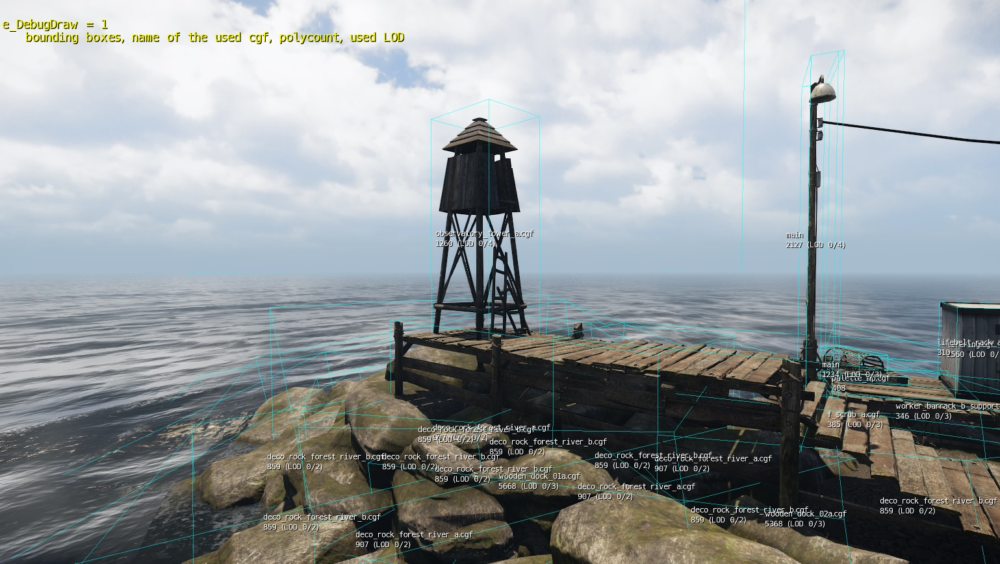
E_DebugDraw 2
This debug view helps visualize the polycount of the object via color. It also displays the actual polycount at the pivot point.
- Red = 20k+
- Yellow=10k+
- Green=5k+
- Turquoise=2500+
- Blue=1250+
- Everything under 1250 will be shaded as normal
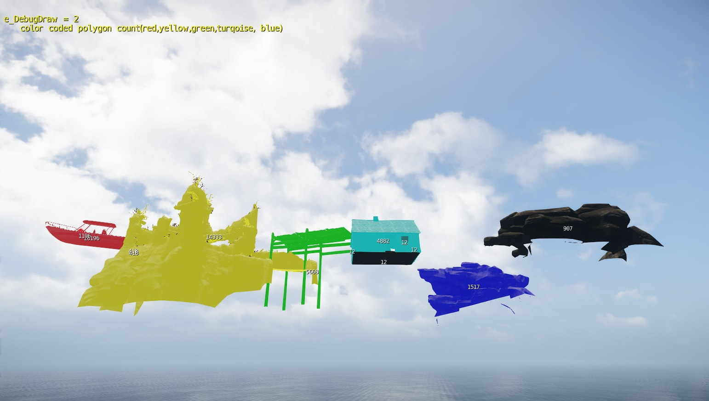
E_DebugDraw 3
This debug draw mode shows a color coded LOD view and detailed LOD information.
The format of the debug text is as follows:
Eg: 1 [0;4] (100/156.3)
| Ref | Explanation |
|---|---|
| 1 | Current LOD currently being used |
| [0;4] | min LOD, max LOD (minimum LOD is zero, maximum is four (for this object) |
| 100 | LOD Ratio setup in the object properties (rollup bar). |
| 156.3 | Distance to object from camera |
What your scene should look like is everything close to the camera should generally be red, then as the distances increases, the colors step down the chain.
- Purple indicates LOD5 rendered.
- Yellow indicates LOD4 rendered.
- Turquoise indicates LOD3 rendered.
- Blue indicates LOD2 rendered.
- Green indicates LOD1 is rendered.
- Red indicates LOD0 is rendered.
- Pulsing red - yellow color indicates that the object has no LODs. (Although some objects are so cheap ( less than 500 polys)an LOD step is not necessary).
Always try to use LODs for your assets, also try to reduce material IDs for your LODs.
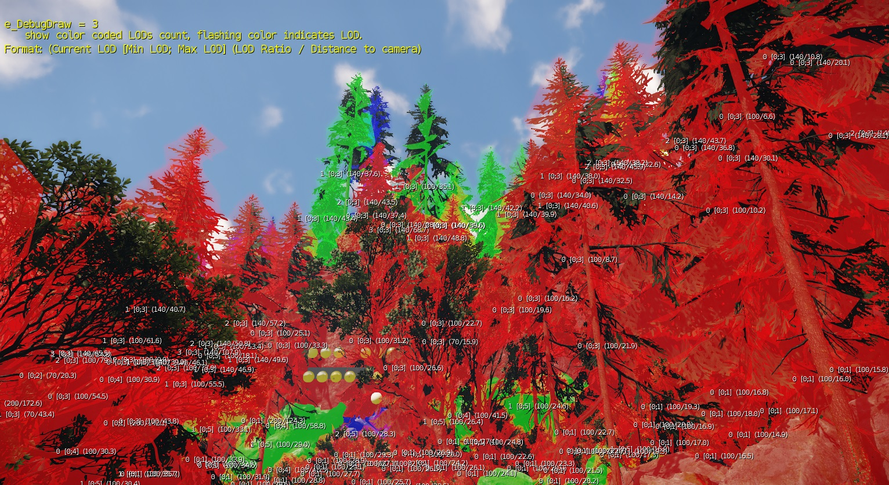
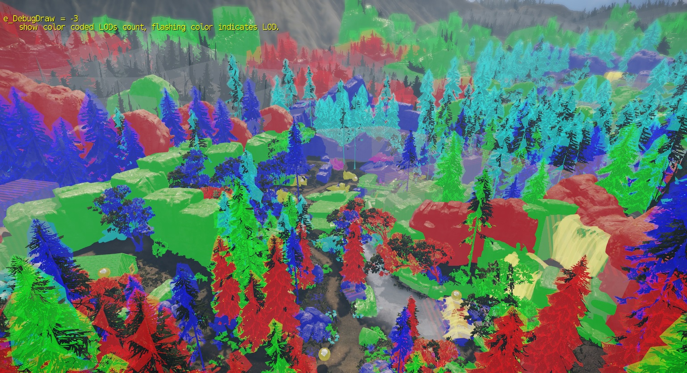
E_DebugDraw 4
Displays the object texture memory usage. (In kb)
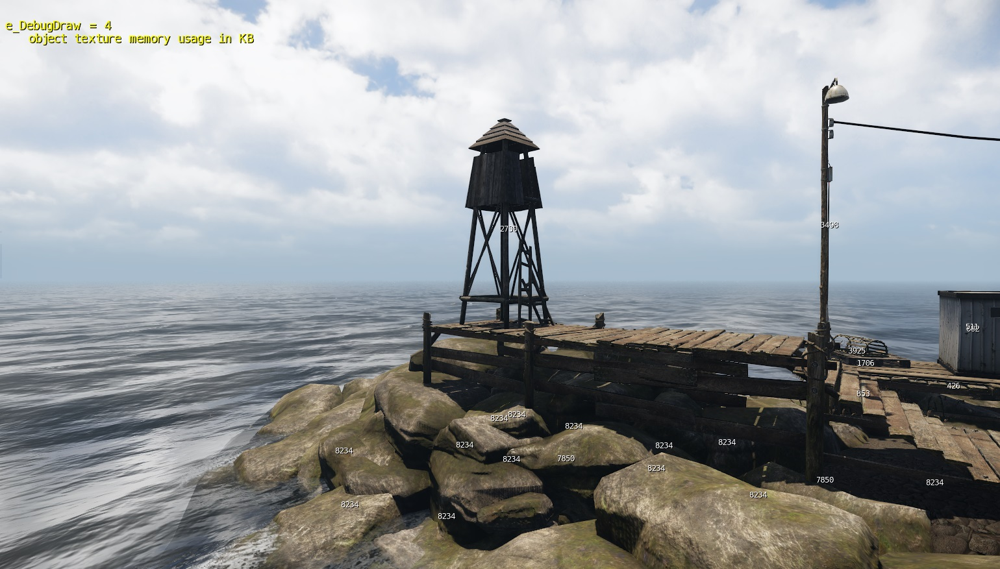
E_DebugDraw 5
Displays the number of rendered materials per object.
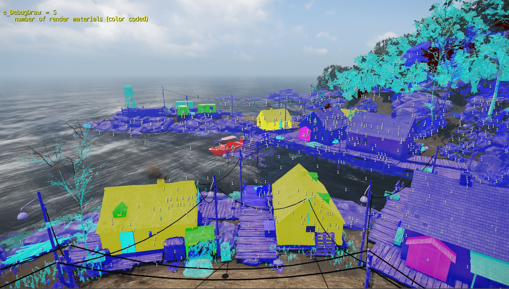
E_DebugDraw 6
Displays the Ambient color (R,G,B,A)
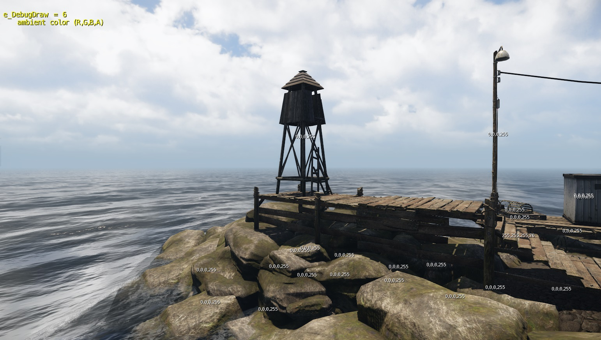
E_DebugDraw 7
Displays a combination of Triangle count, no. of materials & texture memory.
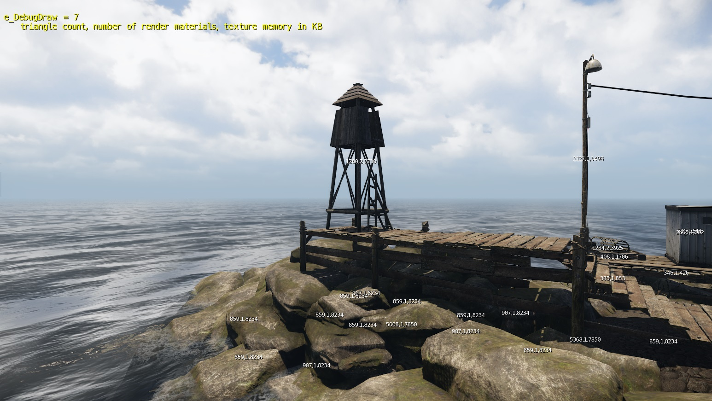
E_DebugDraw 15
This debug draw shows all exported helpers linked to the geometry in 3ds Max, like grab helper, touch bending helper, etc.
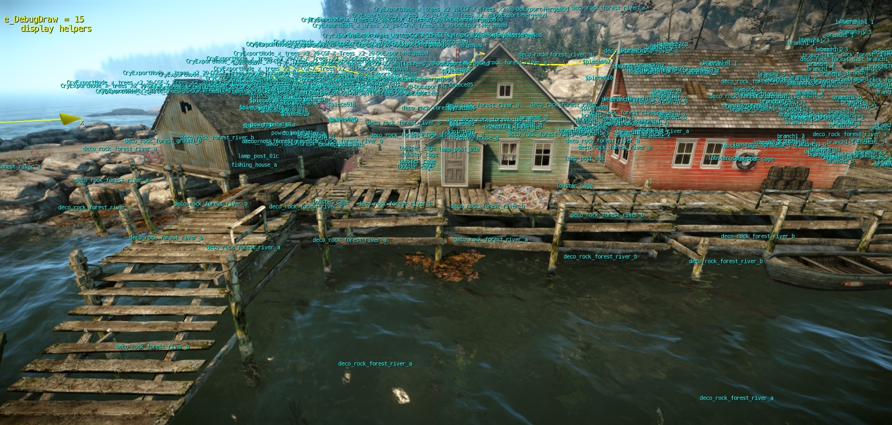
E_DebugDraw 16
Asset Debug Gun. Point the camera at any object. It will detail information about it.
- Object cgf name
- Drawcall breakdown
- Total
- zpass
- general
- transparent
- shadows
- misc
- Current LOD
- Number of instances
- Number of Tris
- Texture memory usage
- Mesh memory usage
- Number of materials
- Mesh Type
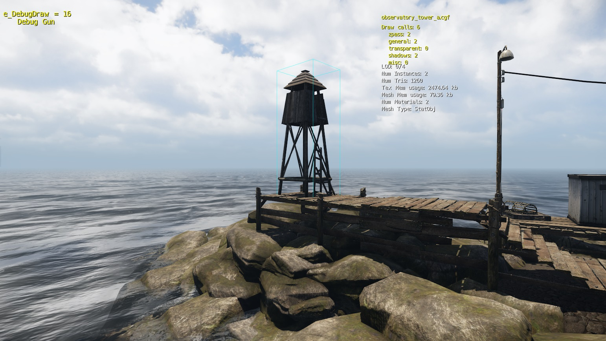
E_DebugDraw 17
This display mode gives you a guidance as to how much geometry & texture memory you are consuming on a 32m block of space. This is just a guidance towards where you are spending too much in either "bucket" Geometry / texture.
- Black pie chart = Geometry
- Blue pie chart = Texture
Increase these 2 cvars to get an idea on the budget of each zone.
- sys_LocalMemoryTextureLimit
- sys_LocalMemoryGeometryLimit
Each tile gets represented with a flat 2d plane with 2 pie-charts on top. 1 for geometry, 1 for textures.
As you fill up each of your budgets, the pie chart will increase.
The tile will be green if you are in a nice cheap area, yellow if reaching your set limit & if you are over budget on either texture or geometry, the tile will go red.
This makes it easy to track down visually where you are spending too much in certain areas.
In this picture, the stats are set to texture = 256mb, geometry = 32mb
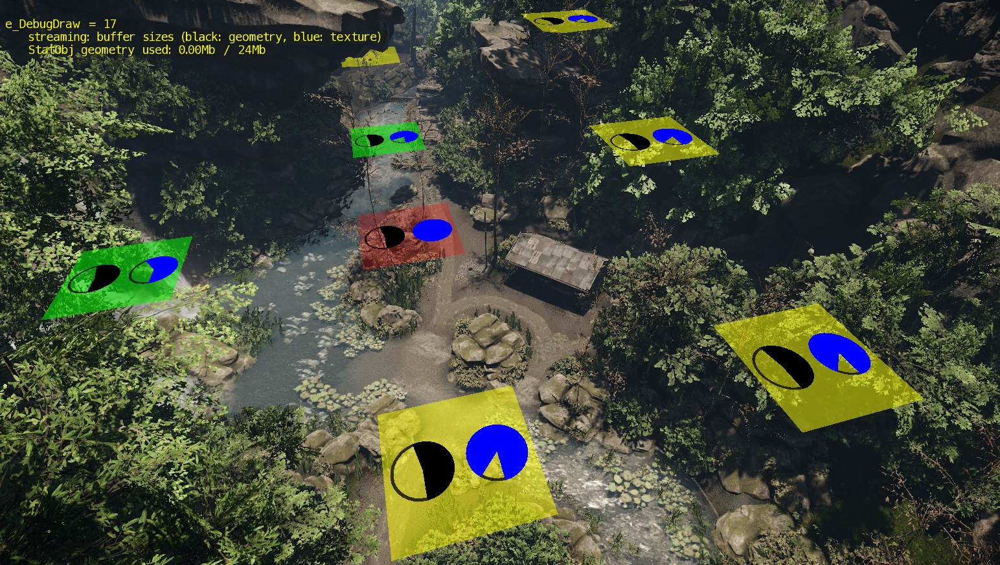
E_DebugDraw 19
This displays the physics proxies triangle count per object.
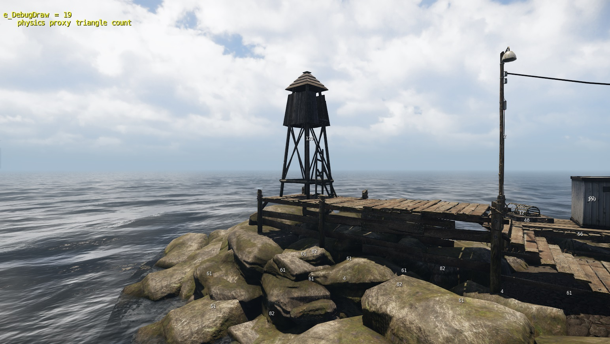
E_debugdraw 20
Displays the object instance texture memory (in kb)
Objects in this picture are the boids.
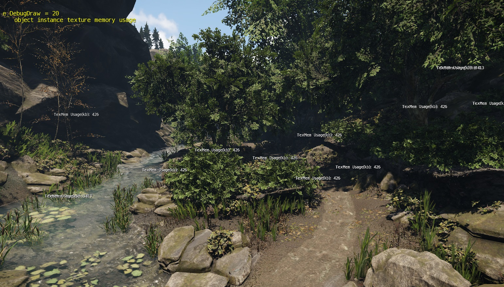
E_debugdraw 21
Displays the distance to the camera of animated objects.
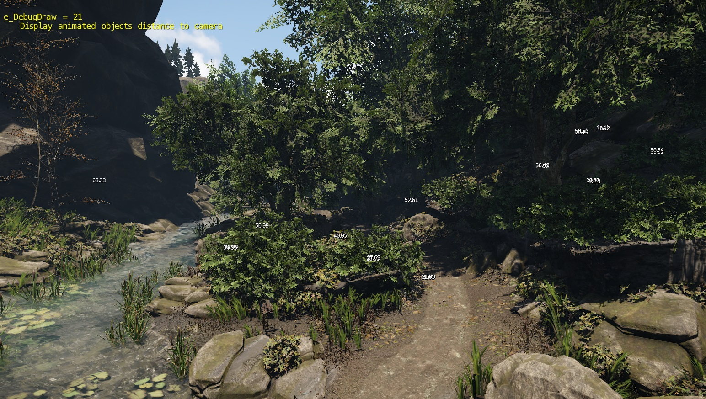
E_debugdraw 22
Displays the vertex count of the current LOD step that the object is in.
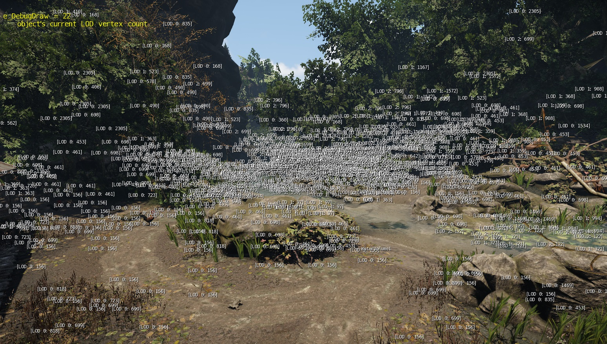
E_debugdraw 23
This applies an overlay on top of the assets to allow you to visualise whether or not the objects are casting a shadow.
- If the object is RED, its is casting a shadow.
- If the object is GREEN, it is NOT casting a shadow.
- If the object has several SubID's that only some are set to cast a shadow, it will be shaded yellow.
Depending on the amount of SubID's in the material, it will be colored red with a yellow hint if the majority of the ID's are set to cast shadows.
If it is only a few ID's that are set to cast a shadow they will be colored green with a hint of yellow.
So the more complex the shadow setup of the objects material, the coloring will be red.
Green -> Yellow -> Red